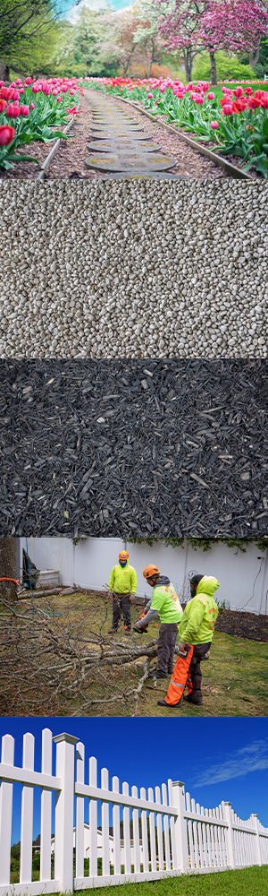

When homeowners think of improving their curb appeal, contacting their local arborist might not be high on the list. But, we’re here to change your mind and show you just how much Atlantic County tree companies like Ben Bivins Tree Experts can enhance your homes exterior. In addition to tree care, our team offers various yard services that contribute to improving the appearance of your yard. Additional services such as fencing, garden clean-ups, mulch delivery, and more are provided by our expert team of workers.

Flower Bed and Garden Spring Clean-Ups
Flowers, plants, and garden beds add color and visual interest to your landscape. Proper maintenance, including weeding, pruning, and deadheading flowers, helps keep them looking fresh and vibrant. Applying mulch to the garden beds not only improves aesthetics but also helps retain moisture and suppress weed growth. Regular care and maintenance of your flower beds and gardens enhance the overall curb appeal and make your property look well-cared-for.
Stone Delivery
If you have stone coverage in your yard and need a refresh, give us a call. Using stone on your property is low maintenance, gives a clean, sleek appearance, effectively guards against weeds, and helps with drainage. No matter what style your home is, a stone yard can complement it. With a variety of sizes and colors available, homeowners have an almost limitless choice of aesthetics.
Mulch Delivery
Applying fresh mulch to garden beds, tree bases, and other landscaped areas not only provides a tidy appearance but also helps conserve moisture, regulate soil temperature, and suppress weed growth. Regular weeding and weed control measures prevent unsightly weed infestations, maintaining a clean and well-maintained appearance throughout your landscape. Contact us for all your mulching needs.
Atlantic County Tree Companies Prune and Trim Trees
Well-maintained trees keep yards looking neat and clean. Unruly trees can make yards look unkempt. Apart from trees, pruning and trimming other shrubs, hedges, and bushes are essential for maintaining a neat and organized landscape. Trimming back overgrown shrubs and hedges, shaping them uniformly, and removing any dead or diseased branches improve the overall appearance of your yard. It helps define clean lines, create visual harmony, and prevent overgrowth that may obstruct views or pathways.
We Do Fencing
Fences enhance a yard’s aesthetics by adding structure, defining boundaries, and offering various styles and designs that complement the home’s architecture. They create visual appeal, organize the space, and provide privacy and security. Fences contribute to curb appeal, serving as focal points and enhancing the overall landscaping. They also offer practical benefits such as safety for children and pets, while allowing for customization with plants and landscaping elements.
Atlantic County Tree Companies Improve Your Yard in Many Ways
By consistently performing these yard services and incorporating proper tree care, you can create a cohesive and visually appealing landscape that enhances the curb appeal of your home. Remember to consider the specific needs of your plants, trees, and lawn, as well as local climate and seasonal variations, to ensure effective and appropriate maintenance practices. Although a well-maintained lawn is the corner stone of curb appeal, it is far from the only thing that contributes. Regular lawn mowing, edging, and trimming help keep the grass at an appropriate height and maintain clean, defined borders. Similarly, routine tree and shrub care enhance the benefits provided by them in addition to keeping your yard looking it’s best. Atlantic County tree companies provide a number of other services above and beyond tree care that can improve and enhance your yards appearance.